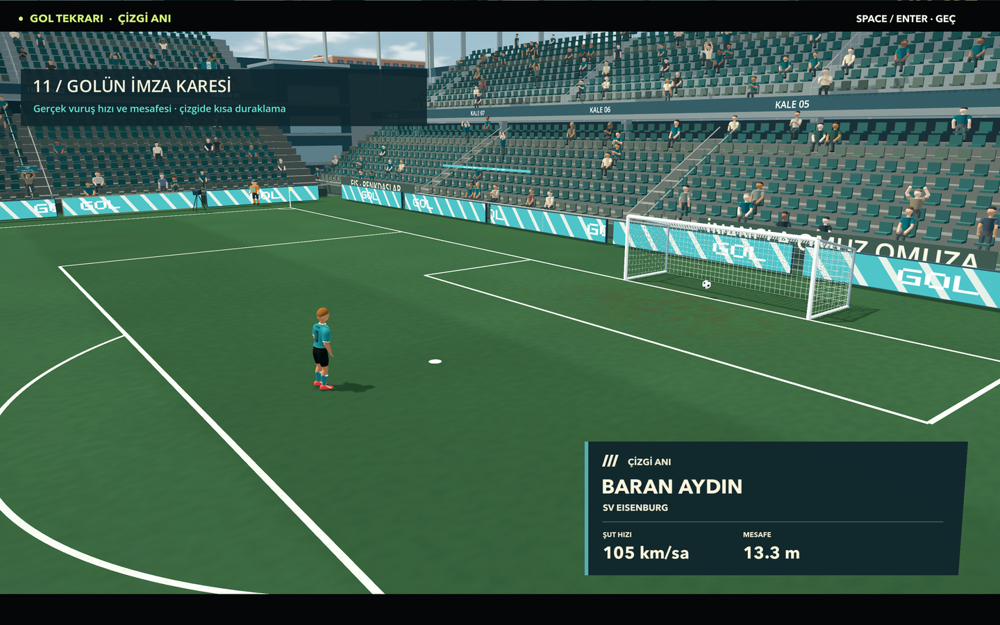
GOL TEKRARI
Çizgi anı
Gol tekrarında topun tamamı çizgiyi geçtiğinde kısa duraklama. Kart golcüyü, vuruş anında ölçülen hızı ve kaleye mesafeyi gösteriyor.
Oyuncuya özgü hareketler, çalım izleri, birlikte gol sevinci ve yaşayan tribünler. Eklenen yedi özelliğin oyunun kendi modelleri ve efektleriyle hazırlanmış görüntüleri.
Yakın takım arkadaşı golcüyle buluşuyor; eller ortak noktaya uzanıyor. Ardından oyuncular kişisel sevinçlerine devam ediyor. Videoyu indir

Gol tekrarında topun tamamı çizgiyi geçtiğinde kısa duraklama. Kart golcüyü, vuruş anında ölçülen hızı ve kaleye mesafeyi gösteriyor.
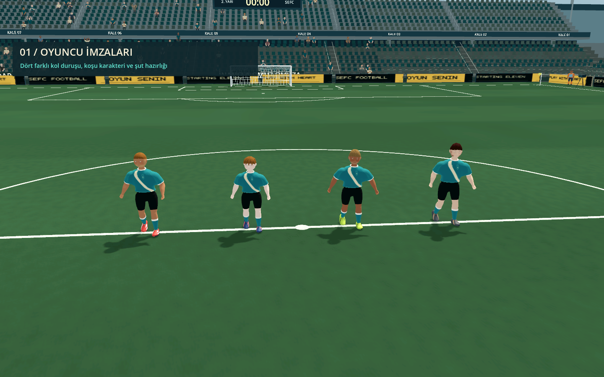
Koşuda kol salınımı ve gövde duruşu; şut hazırlığı, top karşılama ve maç öncesi selamlamada farklı jestler.
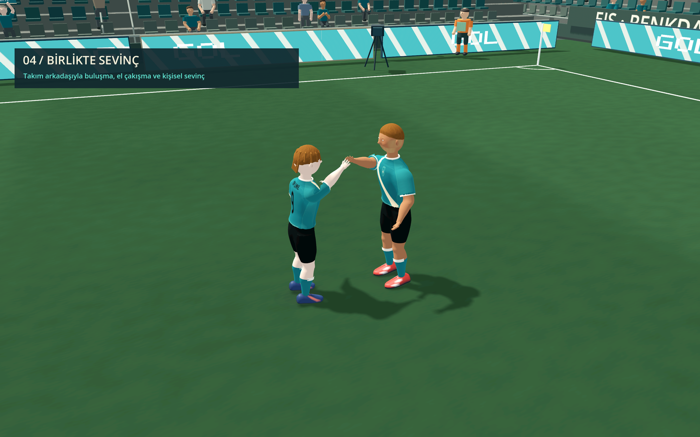
Golcü ve yakın arkadaşı birbirine dönüyor. Kol uzanışı, iki oyuncunun arasındaki ortak el hedefini takip ediyor.
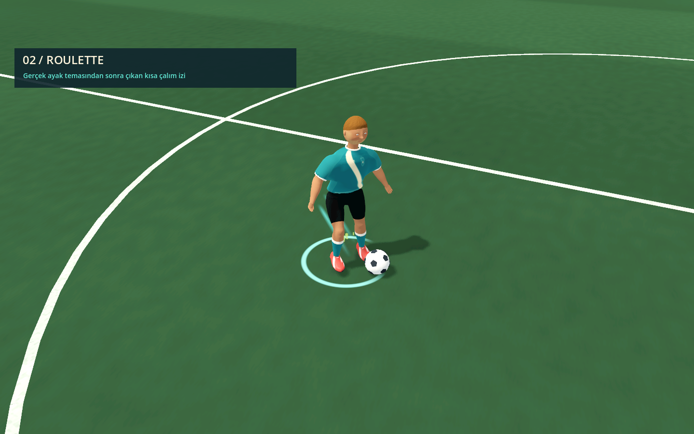
Dönüş çalımları dairesel bir iz bırakıyor. Efekt, oyuncu topa gerçekten temas ettikten sonra çıkıyor.
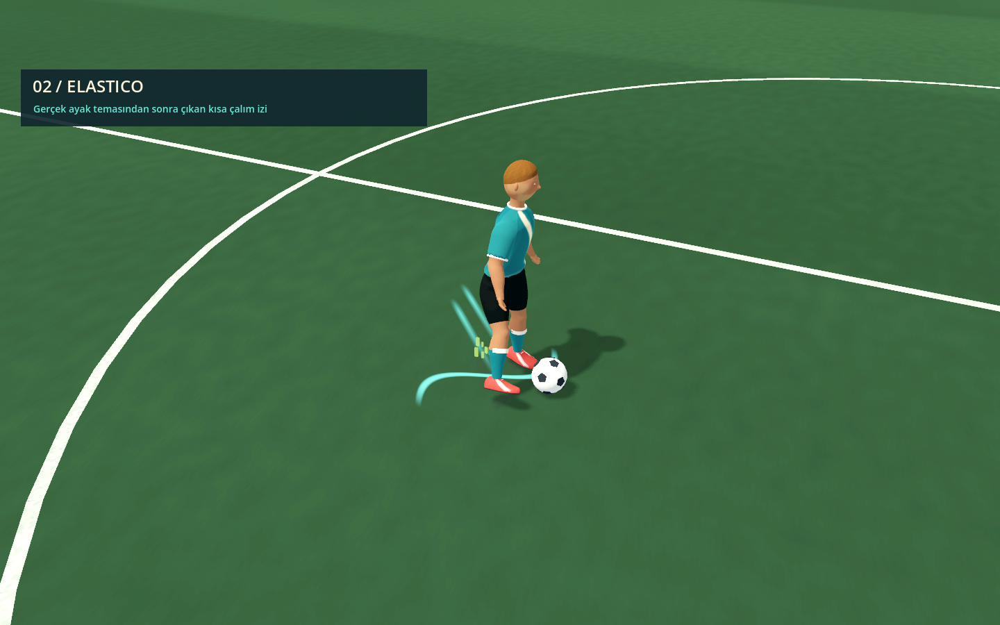
Yön değiştirme için S; kısa kaçışlarda köşeli çizgiler, top kaldırma hareketlerinde kemer biçimi kullanılıyor.
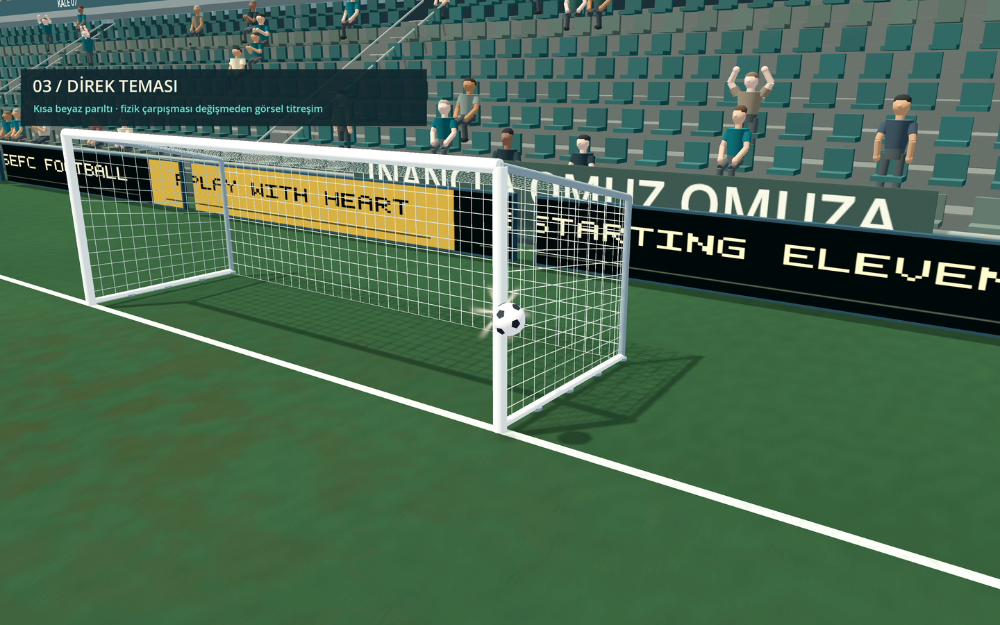
Çarpma noktasında beyaz ışık beliriyor. Görünen direk kısa süre titriyor; çarpışma yüzeyi ve top fiziği korunuyor.
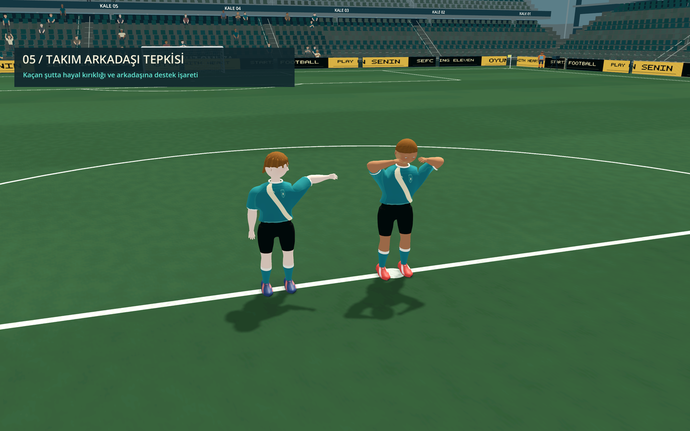
Tamamlanan pasın ardından kısa bir işaret; kaçan şutta yakındaki oyuncudan destek. Yeni hareket komutu bu jestleri kesebiliyor.
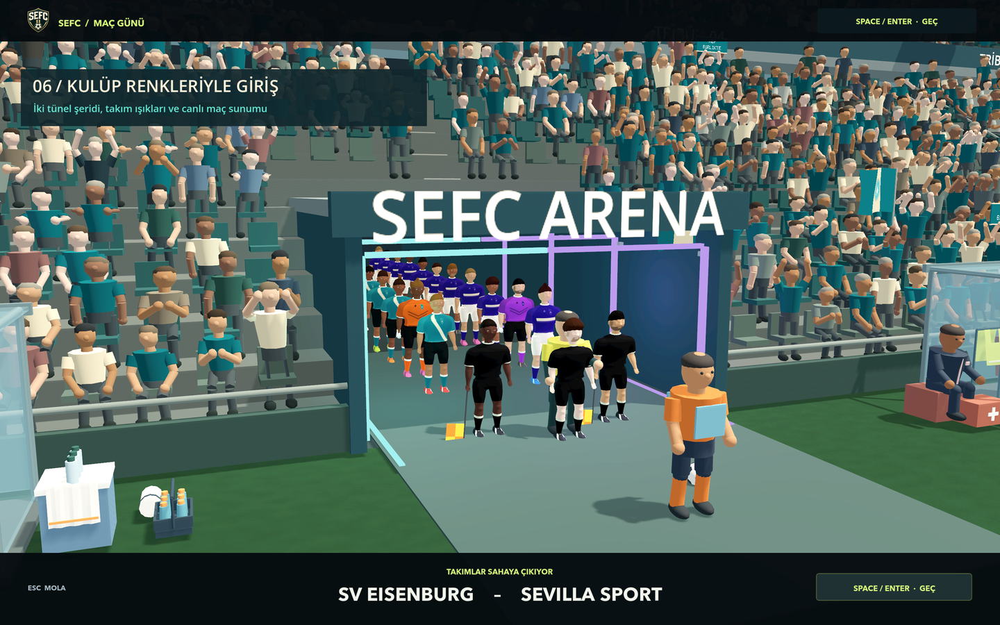
İki ayrı tünel hattı, takımların forma renklerine göre ışıklandırılıyor. Işıklar maç girişi sırasında çalışıyor.
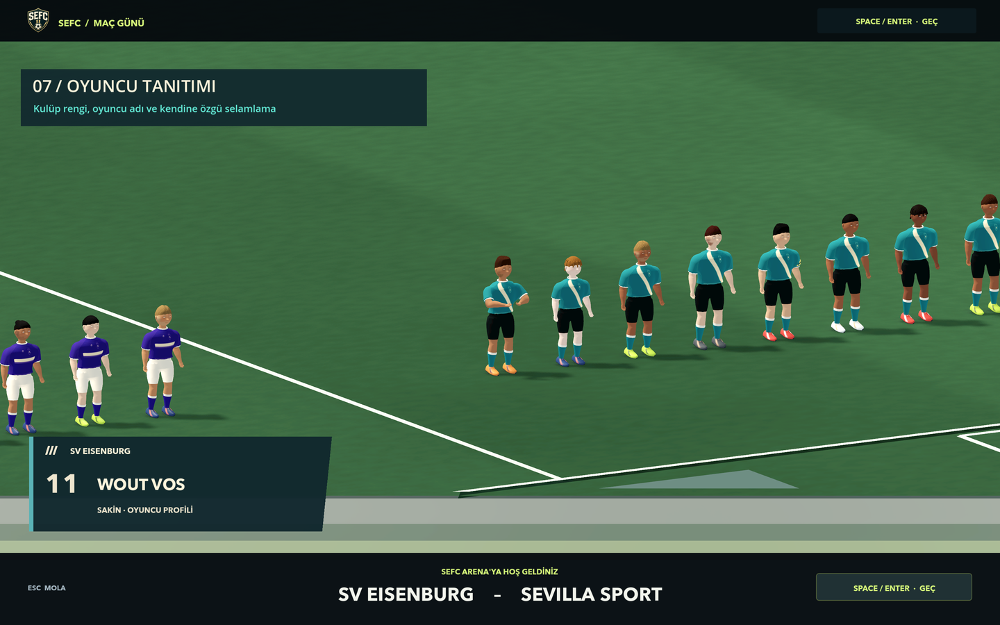
İki takımdan birer oyuncu kısa yakın çekimle tanıtılıyor; oyuncunun hareket karakteri ve kulüp rengi karta yansıyor.
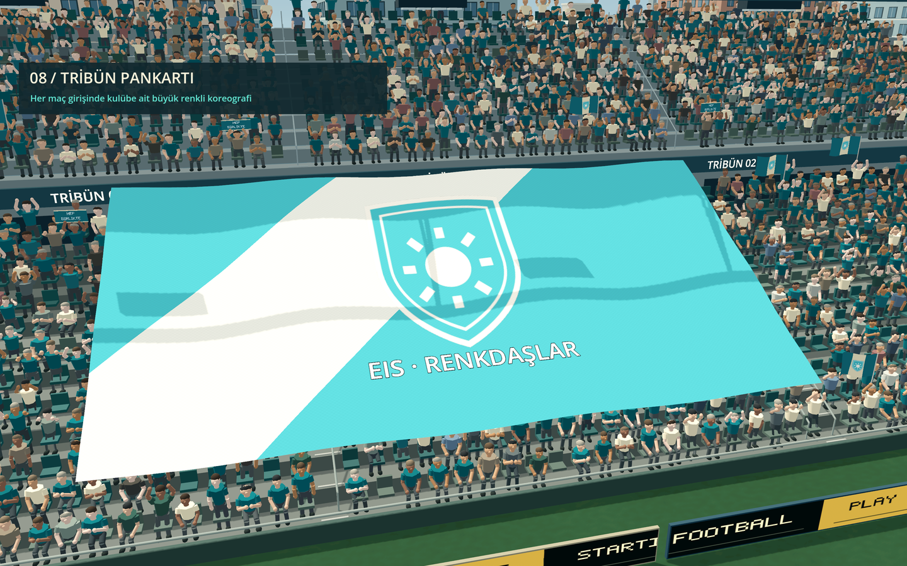
Maç açılışında tribün kumaşları kulüp renkleri ve armalarıyla açılıyor. Rekabet maçlarında gösterim daha uzun sürüyor.
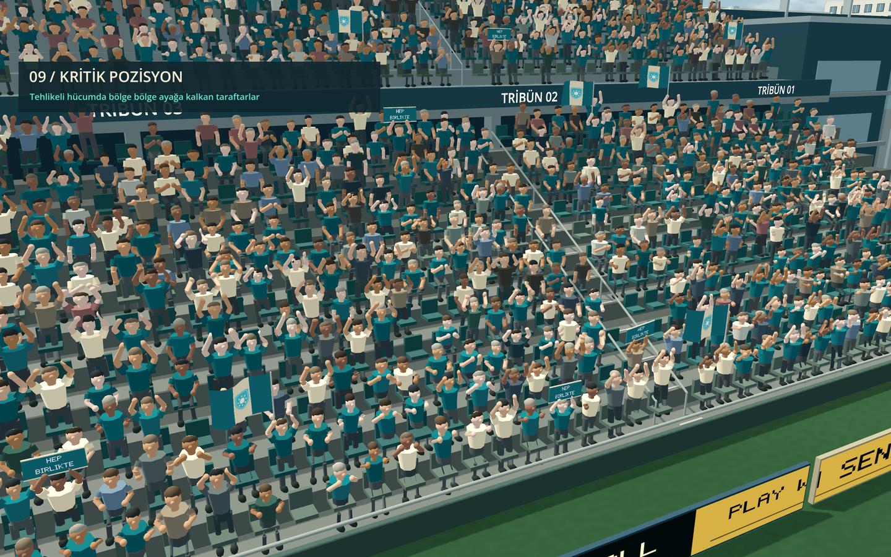
Tehlikeli atakta tepki topun bulunduğu bölgeden başlayıp çevredeki tribün bölümlerine gecikmeli ulaşıyor.
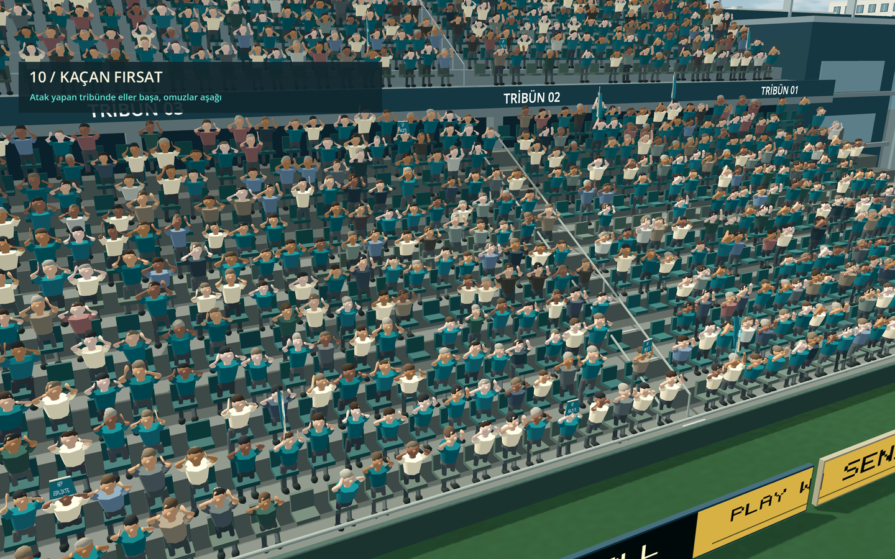
Desteklenen takımın şutu kaçtığında taraftarların elleri başa gidiyor, omuzlar düşüyor; tepki herkeste aynı karede başlamıyor.
Örnekler Godot Mobile/Metal görüntüsünden alındı. Çekim kameraları ve olaylar inceleme için hazırlanmıştır; gol kartının ölçümleri gerçek fiziksel vuruştan gelir. Video, 42 kareyi 24 kare/saniyede gösterir. Azaltılmış hareket ayarı çalım izlerini, direk titreşimini ve giriş ışığı dalgalanmasını kapatır; oyuncu tanıtımında geniş kamera kullanır. Uygulama ve test notları · Power shot ve önceki efektler